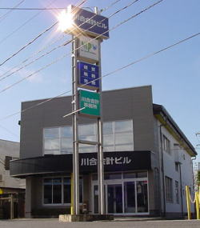

～ お客様の永続と繁栄 ～
私たちは、毎月お客様をご訪問させていただくことを基本として、報告書と財務諸表について誠心誠意ご説明申し上げ、「ここまでやってくれるのか」と思って頂けるような徹底的に完璧な仕事をすることを心掛けております。また、所員の資格取得などによるお客様への安心を維持するため、税務その他の知識習得に日々努力しております。

川合会計なら
経営・税務・労務のトータルサポート
税理士（川合）と社会保険労務士（横山）により、お客様に対し、経営・税務・労務のトータルサポートをすることができます。また、弁護士、司法書士との顧問契約や提携、紹介などにより殆どの事案について迅速に対処することが可能です。
TKC全国会会員事務所による最新システムと月次巡回監査
川合会計は、税理士・公認会計士の全国ネットワークであるＴＫＣ全国会の会員事務所です。株式会社ＴＫＣの最新ソフトを利用し、お客様に最も有益なサービスを提供しています。また、毎月巡回監査（※）をし、その場で実績を報告し、更に、決算直前だけではなく、随時決算対策（予算実績分析、期末業績予測）を行っております。
※お客様との契約により異なる場合があります事務所紹介
- 名称
- 川合会計事務所／川合賢助税理士事務所
- 所在地
- 〒990-0025 山形県山形市あこや町1-15-5
- 電話／ＦＡＸ
- ０２３-６３２-８６６０／０２３-６２４-７４２５
- 営業時間
- ８：３０～１７：３０
- 休業日
- 土・日・祝日（時期によって多少異なります）
- 所員構成
- 税理士・・１名 社会保険労務士・・１名 ＣＦＰ・・２名 男性・・１０名 女性・・４名
- 関与先企業
- 法人 個人事業 庄内、最上、村山、置賜の県内全域
事務所のあゆみ
業務内容
≪ 経 営 ≫
- 中期・長期経営計画の立案
- 業務分掌、帳簿組織の立案
- 生保・損保の提案・設計・指導（企業防衛）
- 事業承継対策
- 借入金対策、融資の申請手続き、企業格付け
- 資産運用、事業開業シミュレーション
- 会社設立関係書類作成、及び諸手続き（司法書士との業務提携）
- 医療法人設立関係書類作成、及び諸手続き（医業経営コンサルタント）
- 登記関係書類の作成
- 建設業変更届、許可申請、各種申請書の作成及び手続き
- 陸上運送許可申請
≪ 税 務 ≫
- 個人の決算及び所得税の確定申告書作成
- 法人の決算及び法人税の確定申告書作成
- 決算対策検討会による節税対策の徹底
- 相続、贈与、譲渡などの資産税に関するご相談、及び申告書作成
- 土地、株式等の評価額算出、相続税対策
- 税務調査立会い
- 年末調整
- その他税務関係書類作成、及び諸手続き
≪ 会 計 ≫
- 月次巡回訪問による会計書類の監査、及び会計処理に関する相談及び指導
- コンピュータ処理による試算表、及び各種経営分析表の作成（ＴＫＣシステム）
- コンピュータ会計導入の指導及びサポート（ＴＫＣ自計化システム）
- 戦略財務情報システム（ＦＸ２）
- 戦略販売・購買情報システム（ＳＸ２）
- 戦略人事給与情報システム（ＰＸ２）
≪ 労 務 ≫
- 給与・賞与計算
- 人事評価、適性検査
- 算定基礎届出、労働保険申告書届出
- 各種助成金の提案、申請
- 社会保険関係書類作成、及び諸手続き（健康保険、年金加入、給付）
- 就業規則、給与規定その他諸規定の立案、作成
所長挨拶
私たちが日常にしたいこと
- １．朝は太陽と共に目覚める
- ２．元気良く大きな声でハツラツと自ら進んで挨拶をかわす
- ３．気が付いたらすぐに行動し、呼ばれたら「はい」と大きな声で返事をし、お互いに声を掛け合う
- ４．常に目標を掲げ、優先順位のもとに短期長期のプランを立てて、必ず全うする
- ５．整理整頓、掃除をきちんとする習慣をつける
所長プロフィール
更新情報
アクセス
●お車の場合
【山形駅方面から】
山形駅から県庁方面へ車で２ｋｍ直進、左手・屋上に看板「清酒 爛漫(らんまん)」がある茶色の8階建ビルのある交差点を右折、５０ｍ先右手
【山形自動車道山形蔵王インター方面から】
山形駅方面へ車で２ｋｍ直進、１３号線高架をくぐり、一つ目の交差点を左折、５０ｍ先右手
【天童・東根方面から】
１３号線バイパスあこやインターをおり、山形駅方面へ右折、一つ目の交差点を左折、５０ｍ先右手
【米沢、南陽、上山方面から】
１３号線バイパスあこやインターをおり、山形駅方面へ左折、一つ目の交差点を左折、５０ｍ先右手
●バスの場合
山交バス県庁前行き あこや町１丁目停留所下車、すぐ手前の交差点を左折(南進)、５０ｍ先右手
お気軽にお問い合わせください
昭和49年創業、山形市あこや町の川合会計事務所。
経営・税務・労務のトータルサポートを承ります。